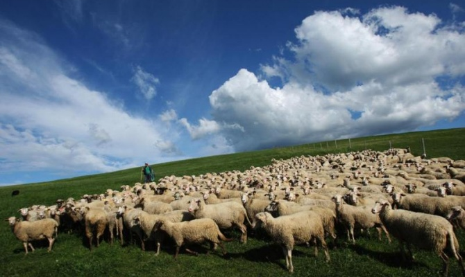

Борбордук Азия өлкөлөрүндөгү жердин бузулушу жана анын чөлгө айлануусу көйгөйлүү маселе болуп саналат. Бул маселе Нарын облустунун Ак-Талаа айылында дагы байкалат. Бул бир гана экосистемага коркунуч туудурбастан, ошондой эле адамдардын жакшы турмушу менен экономикалык өнүгүшүнө да терс таасирин тийгизет. Акыркы изилдөөлөрдүн эсептөөлөрү боюнча региондогу жердин бузулуусунан болгон жылдык зыян 6 млрд долларды (это данные до 2018го года, завтра исправим) түзгөн.
Жыл өткөн сайын жайыттардын көп бөлүгү асылдуулугун жоготуп баратат. Ага жайыттардан алган пайданы тездетүү аракети себеп болууда. Өлкөдөгү малдын санынын өсүшү байкалган менен туура жаюу жолу каралган эмес. Малчыларга малды туура жаюу, жайыт пайдаланууну колго алуу жагдайлары үйрөтүлгөн менен ал аракеттин иш жүзүнө ашышы кыйын болууда. Буга байланыштуу Кыргызстандагы жайыттардын 70 пайызга жакыны ар түрдүү деңгээлдеги такырланууга учурап баратат. “Кыргызгипромземдин” техникалык бөлүмүнүн жетекчиси Исак Калдыкеевдин айтымына караганда, 1,6 млн. гектардан ашык жерде такырдануу маселеси бар. Мындай жерлер өзгөчө айылдардын тегерегиндеги аймактарда орун алган.
Жайыт комитеттери жайыттарды туура пайдаланууну жана анын эрежелерин окутуусу керек. Ар бир жайыт пайдалануучу аны туура түшүнүү керек. Бүгүнкү пайдалануу менен күн бүтпөйт. Эртеңкилерге жайыттарды жетиштүү деңгээлде тапшыруу учурдагылардын колунда. Жерлердин бузулунун башталышы, ортосу жана жеткен чеги бар. Ошол чекке жеткирбөө керек